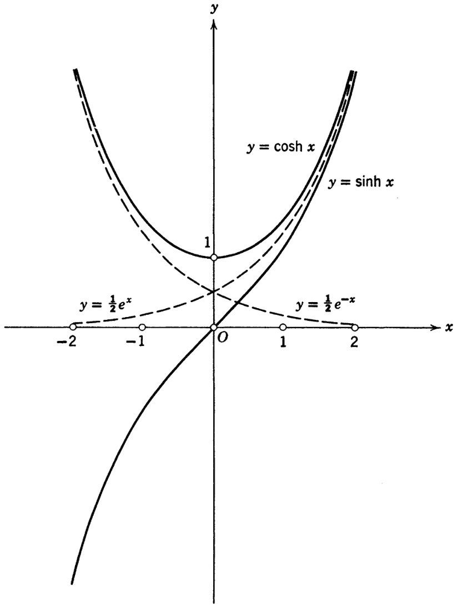
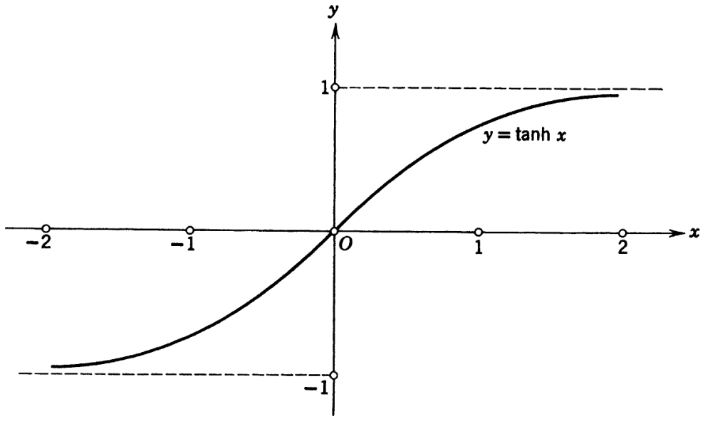
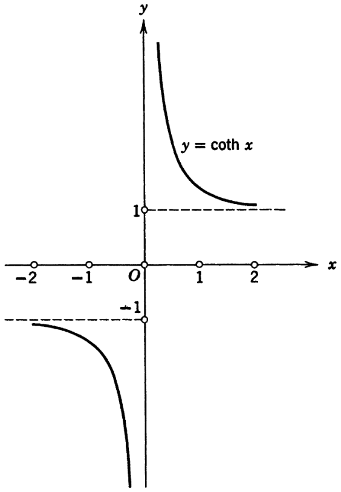
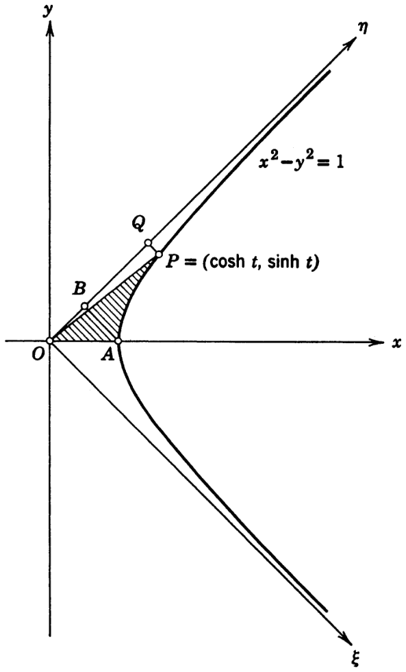
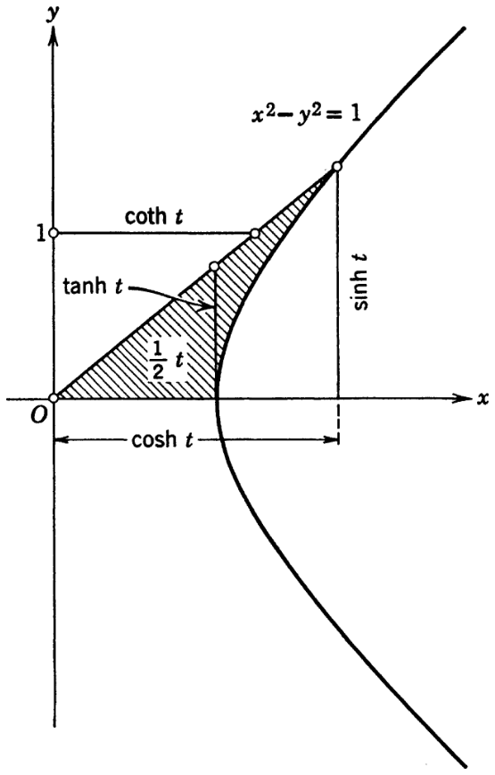

a. 解析定义
在许多应用中，指数函数以 1 2 ( e x + e − x ) \tfrac12(e^x+e^{-x}) 2 1 ( e x + e − x ) 1 2 ( e x − e − x ) \tfrac12(e^x-e^{-x}) 2 1 ( e x − e − x )
sinh x = e x − e − x 2 , cosh x = e x + e − x 2 , (9a)
\sinh x=\frac{e^x-e^{-x}}2,\qquad \cosh x=\frac{e^x+e^{-x}}2,\tag{9a}
sinh x = 2 e x − e − x , cosh x = 2 e x + e − x , ( 9a ) tanh x = e x − e − x e x + e − x , coth x = e x + e − x e x − e − x . (9b)
\tanh x=\frac{e^x-e^{-x}}{e^x+e^{-x}},\qquad \coth x=\frac{e^x+e^{-x}}{e^x-e^{-x}}.\tag{9b}
tanh x = e x + e − x e x − e − x , coth x = e x − e − x e x + e − x . ( 9b ) 它们依次称为双曲正弦、双曲余弦、双曲正切、双曲余切 。sinh x , cosh x , tanh x \sinh x,\cosh x,\tanh x sinh x , cosh x , tanh x x x x coth x \coth x coth x x = 0 x=0 x = 0 y = ( 1 2 ) e x y=(\tfrac12)e^x y = ( 2 1 ) e x y = ( 1 2 ) e − x y=(\tfrac12)e^{-x} y = ( 2 1 ) e − x sinh x \sinh x sinh x cosh x \cosh x cosh x

图 3.9 
图 3.10 
图 3.11 cosh x \cosh x cosh x x x x − x -x − x sinh x \sinh x sinh x x x x cosh x = ( e x + e − x ) / 2 \cosh x=(e^x+e^{-x})/2 cosh x = ( e x + e − x ) /2 1 1 1 x = 0 x=0 x = 0 cosh 0 = 1 \cosh0=1 cosh 0 = 1
双曲余弦和双曲正弦之间的基本关系
cosh 2 x − sinh 2 x = 1
\cosh^2x-\sinh^2x=1
cosh 2 x − sinh 2 x = 1 可从定义立即得到。现在将自变量由 x x x t t t x = cosh t , y = sinh t x=\cosh t,\ y=\sinh t x = cosh t , y = sinh t x 2 − y 2 = 1 x^2-y^2=1 x 2 − y 2 = 1 t t t − ∞ -\infty − ∞ + ∞ +\infty + ∞ x = cosh t , y = sinh t x=\cosh t,\ y=\sinh t x = cosh t , y = sinh t x 2 − y 2 = 1 x^2-y^2=1 x 2 − y 2 = 1 x ≥ 1 x\ge1 x ≥ 1 t t t y y y t t t e t e^t e t e − t e^{-t} e − t t t t − ∞ -\infty − ∞ + ∞ +\infty + ∞ x = cosh t , y = sinh t x=\cosh t,\ y=\sinh t x = cosh t , y = sinh t
b. 加法定理与求导公式
由定义可得双曲函数的加法定理 ：
cosh ( a + b ) = cosh a cosh b + sinh a sinh b , sinh ( a + b ) = sinh a cosh b + cosh a sinh b . (10)
\begin{aligned}
\cosh(a+b)&=\cosh a\cosh b+\sinh a\sinh b,\\
\sinh(a+b)&=\sinh a\cosh b+\cosh a\sinh b.
\end{aligned}\tag{10}
cosh ( a + b ) sinh ( a + b ) = cosh a cosh b + sinh a sinh b , = sinh a cosh b + cosh a sinh b . ( 10 ) 要证明它们，只须写出
cosh ( a + b ) = e a e b + e − a e − b 2 , sinh ( a + b ) = e a e b − e − a e − b 2 ,
\cosh(a+b)=\frac{e^ae^b+e^{-a}e^{-b}}2,\qquad
\sinh(a+b)=\frac{e^ae^b-e^{-a}e^{-b}}2,
cosh ( a + b ) = 2 e a e b + e − a e − b , sinh ( a + b ) = 2 e a e b − e − a e − b , 再代入
e a = cosh a + sinh a , e − a = cosh a − sinh a , e b = cosh b + sinh b , e − b = cosh b − sinh b .
\begin{aligned}
e^a=\cosh a+\sinh a,&\qquad e^{-a}=\cosh a-\sinh a,\\
e^b=\cosh b+\sinh b,&\qquad e^{-b}=\cosh b-\sinh b.
\end{aligned}
e a = cosh a + sinh a , e b = cosh b + sinh b , e − a = cosh a − sinh a , e − b = cosh b − sinh b . 这些公式与相应的三角公式惊人地相似。两种加法定理之间仅有第一式中的一个符号不同。
求导公式也有相应的类似之处。记住 d ( e x ) / d x = e x d(e^x)/dx=e^x d ( e x ) / d x = e x
d d x cosh x = sinh x , d d x sinh x = cosh x , d d x tanh x = 1 cosh 2 x , d d x coth x = − 1 sinh 2 x . (11)
\begin{aligned}
\frac d{dx}\cosh x&=\sinh x,& \frac d{dx}\sinh x&=\cosh x,\\
\frac d{dx}\tanh x&=\frac1{\cosh^2x},&\frac d{dx}\coth x&=-\frac1{\sinh^2x}.
\end{aligned}\tag{11}
d x d cosh x d x d tanh x = sinh x , = cosh 2 x 1 , d x d sinh x d x d coth x = cosh x , = − sinh 2 x 1 . ( 11 ) 头两个等式立即表明，y = cosh x y=\cosh x y = cosh x y = sinh x y=\sinh x y = sinh x
d 2 y d x 2 = y (12)
\frac{d^2y}{dx^2}=y\tag{12}
d x 2 d 2 y = y ( 12 ) 的解。这个方程同样只在符号上与 cos x , sin x \cos x,\sin x cos x , sin x
c. 反双曲函数
与双曲函数 x = cosh t , y = sinh t x=\cosh t,\ y=\sinh t x = cosh t , y = sinh t
t = ar cosh x , t = ar sinh y .
t=\operatorname{ar\,cosh}x,\qquad t=\operatorname{ar\,sinh}y.
t = ar cosh x , t = ar sinh y . sinh t \sinh t sinh t − ∞ < t < + ∞ -\infty<t<+\infty − ∞ < t < + ∞ y y y t = ar cosh x t=\operatorname{ar\,cosh}x t = ar cosh x x x x t t t − t -t − t t t t cosh t ≥ 1 \cosh t\ge1 cosh t ≥ 1 x ≥ 1 x\ge1 x ≥ 1
原注 1（第 232 页） 也用 cosh − 1 x \cosh^{-1}x cosh − 1 x 原注 2（第 232 页） ( d / d t ) sinh t = cosh t > 0 (d/dt)\sinh t=\cosh t>0 ( d / d t ) sinh t = cosh t > 0
利用对数很容易表示这些反函数。在定义 x = ( e t + e − t ) / 2 , y = ( e t − e − t ) / 2 x=(e^t+e^{-t})/2,\ y=(e^t-e^{-t})/2 x = ( e t + e − t ) /2 , y = ( e t − e − t ) /2 e t = u e^t=u e t = u
u = x ± x 2 − 1 , u = y + y 2 + 1 .
u=x\pm\sqrt{x^2-1},\qquad u=y+\sqrt{y^2+1}.
u = x ± x 2 − 1 , u = y + y 2 + 1 . 由于 u = e t u=e^t u = e t t = log u t=\log u t = log u
t = log ( x ± x 2 − 1 ) = ar cosh x , t = log ( y + y 2 + 1 ) = ar sinh y . (13)
\begin{aligned}
t&=\log(x\pm\sqrt{x^2-1})=\operatorname{ar\,cosh}x,\\
t&=\log(y+\sqrt{y^2+1})=\operatorname{ar\,sinh}y.
\end{aligned}\tag{13}
t t = log ( x ± x 2 − 1 ) = ar cosh x , = log ( y + y 2 + 1 ) = ar sinh y . ( 13 ) ar cosh x \operatorname{ar\,cosh}x ar cosh x x ≥ 1 x\ge1 x ≥ 1 ar sinh y \operatorname{ar\,sinh}y ar sinh y y y y log ( x + x 2 − 1 ) \log(x+\sqrt{x^2-1}) log ( x + x 2 − 1 ) log ( x − x 2 − 1 ) \log(x-\sqrt{x^2-1}) log ( x − x 2 − 1 ) ( x + x 2 − 1 ) ( x − x 2 − 1 ) = 1 (x+\sqrt{x^2-1})(x-\sqrt{x^2-1})=1 ( x + x 2 − 1 ) ( x − x 2 − 1 ) = 1 t t t
同样可以定义双曲正切与双曲余切的反函数，也可以把它们表示成对数。这些函数记作 ar tanh x \operatorname{ar\,tanh}x ar tanh x ar coth x \operatorname{ar\,coth}x ar coth x x x x
ar tanh x = 1 2 log 1 + x 1 − x ( − 1 < x < 1 ) , ar coth x = 1 2 log x + 1 x − 1 ( x < − 1 , x > 1 两个区间 ) . (14)
\begin{aligned}
\operatorname{ar\,tanh}x&=\tfrac12\log\frac{1+x}{1-x} &&(-1<x<1),\\
\operatorname{ar\,coth}x&=\tfrac12\log\frac{x+1}{x-1} &&(x<-1,\ x>1\ \text{两个区间}).
\end{aligned}\tag{14}
ar tanh x ar coth x = 2 1 log 1 − x 1 + x = 2 1 log x − 1 x + 1 ( − 1 < x < 1 ) , ( x < − 1 , x > 1 两个区间 ) . ( 14 ) 各反函数的求导留给读者。既可用反函数求导法则，也可对对数表达式使用链式法则。以 x x x
d d x ar cosh x = ± 1 x 2 − 1 , d d x ar sinh x = 1 x 2 + 1 , d d x ar tanh x = 1 1 − x 2 , d d x ar coth x = 1 1 − x 2 . (15)
\begin{aligned}
\frac d{dx}\operatorname{ar\,cosh}x&=\pm\frac1{\sqrt{x^2-1}},&
\frac d{dx}\operatorname{ar\,sinh}x&=\frac1{\sqrt{x^2+1}},\\
\frac d{dx}\operatorname{ar\,tanh}x&=\frac1{1-x^2},&
\frac d{dx}\operatorname{ar\,coth}x&=\frac1{1-x^2}.
\end{aligned}\tag{15}
d x d ar cosh x d x d ar tanh x = ± x 2 − 1 1 , = 1 − x 2 1 , d x d ar sinh x d x d ar coth x = x 2 + 1 1 , = 1 − x 2 1 . ( 15 ) 末两式相同却没有矛盾，前一式只在 − 1 < x < 1 -1<x<1 − 1 < x < 1 x < − 1 x<-1 x < − 1 1 < x 1<x 1 < x ± \pm ± y = ar cosh x = log ( x ± x 2 − 1 ) y=\operatorname{ar\,cosh}x=\log(x\pm\sqrt{x^2-1}) y = ar cosh x = log ( x ± x 2 − 1 )
d. 进一步的类比
双曲函数与三角函数的相似并非偶然。等到 §7.7a 把这些函数的自变量推广到虚数时，就会看到它们为什么相似。届时可以把 cosh x \cosh x cosh x cos ( i x ) \cos(ix) cos ( i x ) sinh x \sinh x sinh x ( 1 / i ) sin ( i x ) (1/i)\sin(ix) ( 1/ i ) sin ( i x ) i = − 1 i=\sqrt{-1} i = − 1
先前用 t t t t t t t t t x 2 + y 2 = 1 x^2+y^2=1 x 2 + y 2 = 1 x = cos t , y = sin t x=\cos t,\ y=\sin t x = cos t , y = sin t t t t t t t
与此相仿，对双曲函数，t t t x 2 − y 2 = 1 x^2-y^2=1 x 2 − y 2 = 1 t t t t = ar cosh x t=\operatorname{ar\,cosh}x t = ar cosh x t = ar sinh y t=\operatorname{ar\,sinh}y t = ar sinh y
原注 1（第 234 页） 另一证明见第 372 页。原注 2（第 234 页） 正如 t = arccos x t=\arccos x t = arccos x arc 指单位圆上的一段弧，t = ar cosh x t=\operatorname{ar\,cosh}x t = ar cosh x ar 指等轴双曲线 x 2 − y 2 = 1 x^2-y^2=1 x 2 − y 2 = 1 t t t

图 3.12 证明并不困难。改以双曲线的两条渐近线为坐标轴，作坐标变换
x − y = 2 ξ , x + y = 2 η ,
x-y=\sqrt2\,\xi,\qquad x+y=\sqrt2\,\eta,
x − y = 2 ξ , x + y = 2 η , 亦即 x = ( ξ + η ) / 2 , y = ( η − ξ ) / 2 x=(\xi+\eta)/\sqrt2,\ y=(\eta-\xi)/\sqrt2 x = ( ξ + η ) / 2 , y = ( η − ξ ) / 2 ξ η = 1 2 \xi\eta=\tfrac12 ξ η = 2 1 O P Q OPQ OPQ O A B OAB O A B 1 4 \tfrac14 4 1 O Q OQ OQ Q P QP QP η \eta η 1 / ( 2 η ) 1/(2\eta) 1/ ( 2 η ) A B Q P ABQP A BQP A , B A,B A , B ξ = 1 / 2 , η = 1 / 2 \xi=1/\sqrt2,\ \eta=1/\sqrt2 ξ = 1/ 2 , η = 1/ 2 ξ = ( x − y ) / 2 , η = ( x + y ) / 2 \xi=(x-y)/\sqrt2,\ \eta=(x+y)/\sqrt2 ξ = ( x − y ) / 2 , η = ( x + y ) / 2
2 ∫ 1 / 2 ( x + y ) / 2 ( 1 / 2 η ) d η = log ( x + y ) = log ( x ± x 2 − 1 ) .
2\int_{1/\sqrt2}^{(x+y)/\sqrt2}(1/2\eta)\,d\eta
=\log(x+y)=\log(x\pm\sqrt{x^2-1}).
2 ∫ 1/ 2 ( x + y ) / 2 ( 1/2 η ) d η = log ( x + y ) = log ( x ± x 2 − 1 ) . 由第 233 页式 (13)，它等于 t t t
译者注 看图 3.12 时可沿斜着的 η \eta η A A A P P P B B B Q Q Q η \eta η B B B P P P A B Q P ABQP A BQP
最后，如图 3.13 所示，双曲函数可以用双曲线上的线段作图表示，正如三角函数可以用圆作图表示一样。

图 3.13 双曲函数的几何表示。